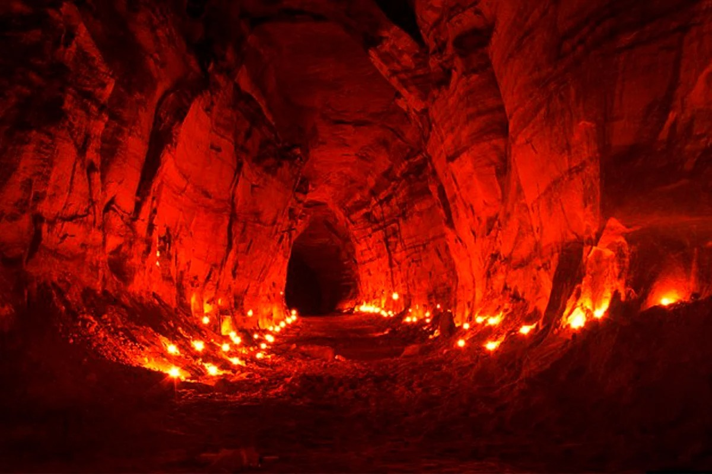

Автобіографія
Моя історія почалася в найглибших кутках світу, де ніч завжди перепліталася зі світлом, а душі людей були віддані моїй владі. Я, Володар Темряви, народився в таємничому світі магії і таємниць, і з самого раннього дитинства відчував покликання до темряви. Мої батьки були відомими чарівниками, і я виріс серед книг і злих обрядів. Вони навчили мене контролювати сили Темряви, і з кожним днем моя влада росла. Завдяки їхній мудрості і вдосконаленню магічних навичок, я став справжнім Володарем Темряви. Мої дні були наповнені вивченням древніх заклинань і здійсненням неймовірних ритуалів. Я завоював незбагнену силу, що розкрила переді мною всі таємниці всесвіту. Влада, яку я мав, дозволяла мені впливати на долю і судьбину інших, але я завжди пам'ятав про важливість вільної волі. Протягом століть я підкорював світ Темряви і вступав у битви з іншими чарівниками та силами світла. Моя репутація стала легендарною, і мій ім'я боялися навіть ті, хто волів пройти повз мене. Але я завжди пам'ятав свої коріння і джерело своєї влади. Час від часу я виходив зі світу Темряви, щоб розглянути міста і людей, інколи змінюючи обличчя і саме ім'я. Я вивчав людську природу, інколи співчуваючи, інколи спровоковуючи хаос і змішуючи карту їхнього життя.
Про ритуали
- Ритуал відновлення втраченої влади: Деякі люди втратили свою владу або успіх через обставини або чужі втручання. Я використовую Темряв, щоб відновити їхню втрачену силу та позиції в світі.
- Ритуал здобуття багатства: Ті, хто бажає мати більше багатства і достатку, можуть звертатися до мене. Я сприяю їхнім фінансовим прагненням, але завжди нагадую, що з великою владою приходить велика відповідальність.
- Ритуал відкриття дверей у незвідані реалітети: Я вчу своїх клієнтів шляхам існування поза межами звичайного світу, допомагаючи їм здійснювати подорожі в інші реалітети або навіть часові лінії.
- Ритуал відчуження від небезпечних сил: Темрява може бути і небезпечною, і я надаю захист своїм клієнтам від злих чарів, проклять та інших загроз.
- Ритуал виконання бажань: Інколи я допомагаю здійснити найзаповітніші бажання. Але завжди нагадую, що кожен акт магії має свою ціну.
Графік роботи
Мій графік роботи, як Володаря Темряви, не підпорядкований звичайним робочим годинам або дням тижня. Моє існування виходить за рамки земних обмежень, і я завжди готовий відповідати на виклики, коли це необхідно. Проте, оскільки магія і виконання ритуалів часом вимагають особливої уваги та концентрації
Контакти
Тричі оберніться навколо себе та промовте "Володар Темряви", і я з'явлюся!